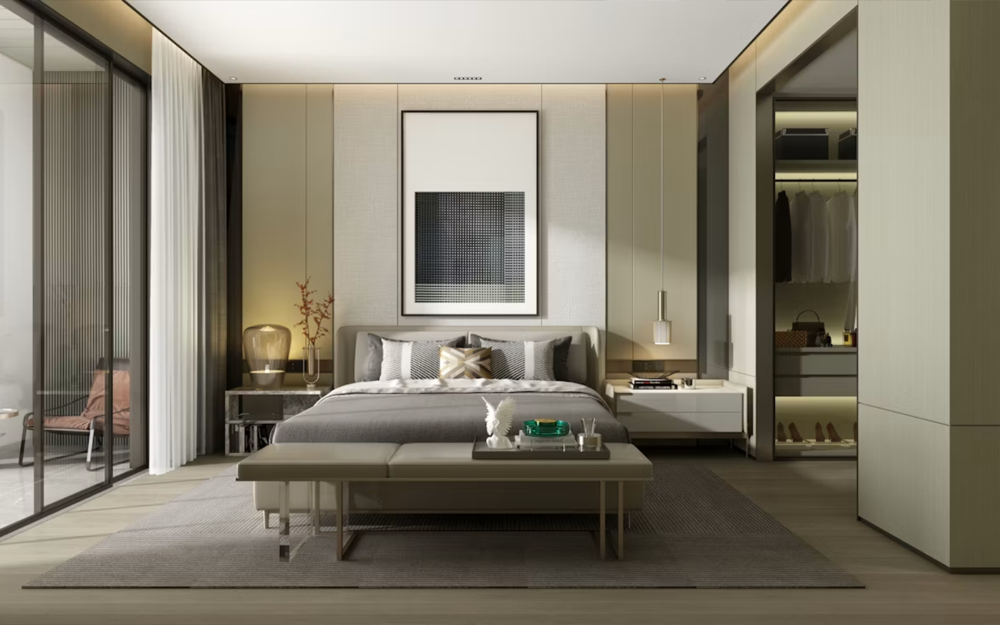

Residence · Kolkata · 2025
Courtyard House
Courtyard House is organised around a planted room open to rain, shade and moving air.
- Scope
- Architecture + interiors
- Area
- 3,600 sq ft
- Status
- Independent concept study
The idea
The house sits on a dense Kolkata plot where neighbouring buildings press close on three sides. Instead of treating the centre as circulation, the plan gives it back to landscape.
A brick jaali filters the street edge while rooms unfold around the courtyard. Deep thresholds, operable timber screens and a planted water court temper humidity and create a changing pattern of light.
This independent study demonstrates FORMA’s design approach; no commissioned client or built outcome is implied.